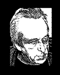

|
 |
Louis Althusser |
Étienne
|
|
|
Reading | |||
|
( Part 1 ) | |||
First published
by François Maspero, Paris, 1968
© 1968 by Librairie François Maspero
This translation first published 1970
© NLB 1970
|
Translator's Note 6
|
|
Foreword to the Italian Edition 7
|
|
Part I: From Capital to Marx's Philosophy 11
|
|
|
|
Index 325 |
page 6
Translator's Note on References: In the original French text of Reading Capital, quotations from Capital were taken from the Éditions Sociales version. The first three volumes of this edition, containing Volume One of Capital, are in the French translation of Joseph Roy, originally published by Maurice La Châtre in 1872, and discussed in the letter from Marx to La Châtre which is printed on p. 9. This translation, the proofs of which Marx read and corrected, modified the German original in many respects, both in order to simplify the text for French workers, and to incorporate Marx's later corrections and additions. This being the case, in this English translation of Reading Capital, I have translated the quotations from Volume One according to Roy's French text; and references are given both to the three Éditions Sociales volumes (T.I, T.II, and T.III) and to the corresponding passage in Lawrence and Wishart's edition of the English translation by Moore and Aveling (Vol. I). The French translations of Volumes Two and Three of Capital are more orthodox, so quotations are taken from the English translation published by Lawrence and Wishart, with minor modifications to bring them into closer accord with the German text where this is important for Althusser's or Balibar's argument. References to Volumes Two and Three are to this English edition (Vol. II and Vol. III). The occasional references to the German text are given to the edition by Dietz Verlag of the Werke of Marx and Engels, in which Das Kapital occupies the twenty-third, twenty-fourth and twenty-fifth volumes (Bd. XXIII, Bd. XXIV and Bd. XXV). Quotations and references to the Theories of Surplus Value are taken from the English translation of the Dietz Verlag edition of 1956-66, two volumes out of three of which have been published by Lawrence and Wishart in 1964 and 1969 (Vol. I and Vol. II). The 1857 Introduction to A Contribution to the Critique of Political Economy and the Grundrisse der Kritik der Politischen Ökonomie have been translated from the German text and references are given to the volume with the latter title published by Dietz Verlag in 1953, referred to as Grundrisse, and where applicable to Pre-Capitalist Economic Formations, translated from the Grundrisse by Jack Cohen and Eric Hobsbawm (Lawrence and Wishart, 1964) referred to as PCEF. Other references are explained when they occur.
Ben Brewster
page 7
Foreword to the Italian Edition
1. This edition of Reading Capital differs from the first edition (Lire le Capital, Vols. I and II, Maspero, Paris 1965) in several respects.
On the one hand, it is an abridged edition, since we have omitted a number of important contributions (the papers of Rancière, Macherey and Establet) in order to allow the book to be published in a smaller format.
On the other, it is a revised and corrected edition, and therefore in part a new edition: several pages, notably in Balibar's text, were published in French for the first time in this edition.
However, the corrections (cuts and additions) we have made to the original text concern neither the terminology nor the categories and concepts used, nor their internal relations, nor in consequence the general interpretation of Marx's work that we have given.
This edition of Reading Capital, although different from the first, and abridged and improved, therefore strictly reproduces and represents the theoretical positions of the original text.
2. This last comment was a necessary one. Indeed, out of respect to the reader and simple honesty, we have maintained an integral respect for the terminology and the philosophical positions of the first edition, although we should now find it indispensable to correct them at two particular points. Despite the precautions we took to distinguish ourselves from the 'structuralist' ideology (we said very clearly that the 'combination' to be found in Marx 'has nothing to do with a combinatory'), despite the decisive intervention of categories foreign to 'structuralism' (determination in the last instance, domination, overdetermination, production process, etc.), the terminology we employed was too close in many respects to the 'structuralist' terminology not to give rise to an ambiguity. With a very few exceptions (some very perceptive critics have made the distinction), our interpretation of Marx has generally been recognized and judged, in homage to the current fashion, as 'structuralist'.
We believe that despite the terminological ambiguity, the profound tendency of our texts was not attached to the 'structuralist' ideology. It is our hope that the reader will be able to bear this claim in mind, to verify it and to subscribe to it.
On the other hand, we now have every reason to think that, despite all
page 8
the sharpening it received, one of the theses I advanced as to the nature of philosophy did express a certain 'theoreticist' tendency. More precisely, the definition of philosophy as a theory of theoretical practice (given in For Marx and again in Part One of Reading Capital ) is unilateral and therefore inaccurate. In this case, it is not merely a question of terminological ambiguity, but one of an error in the conception itself. To define philosophy in a unilateral way as the Theory of theoretical practices (and in consequence as a Theory of the differences between the practices) is a formulation that could not help but induce either 'speculative' or 'positivist' theoretical effects and echoes.
The consequences of this error in the definition of philosophy can be recognized and delimited at a few particular points in Part One of Reading Capital. But with the exception of a few minor details, these consequences do not affect the analysis that we have made of Capital ('The Object of Capital ' and Balibar's paper).
In a forthcoming series of studies, we shall have the opportunity of rectifying the terminology and correcting the definition of philosophy.
Louis Althusser
NOTE TO THE ENGLISH EDITION
For the conjuncture in which this text was prepared (1965), for its character as a theoretico-ideological intervention in that conjuncture, and for its theoretical limits, lacunae and errors, the reader should refer to the pres- entation, 'To My English Readers,' in For Marx.
Louis Althusser, 17 May 1970
page 9
To the citizen Maurice La Châtre
Dear Citizen,
I applaud your idea of publishing the translation of Das Kapital as a serial. In this form the book will be more accessible to the working-class, a consideration which to me outweighs everything else.
This is the good side of your suggestion, but here is the reverse of the medal: the method of analysis which I have employed, and which had not previously been applied to economic subjects, makes the reading of the first chapters rather arduous, and it is to be feared that the French public, always impatient to come to a conclusion, eager to know the connexion between general principles and the immediate questions that have aroused their passions, may be disheartened because they will be unable to move on at once.
This is a disadvantage I am powerless to overcome, unless it be by forewarning and forearming those readers who zealously seek the truth. There is no royal road to science, and only those who do not dread the fatiguing climb of its steep paths have a chance of gaining its luminous summits.
Believe me,
dear citizen
Your devoted,
KARL MARX
London, 18 March 1872.
page 10 [blank]
page 11
Part I
From Capital to Marx's Philosophy
Louis Althusser
page 12 [blank]
page 13
The following papers were delivered in the course of a seminar on Capital held at the École Normale Supérieure early in 1965. They bear the mark of these circumstances: not only in their construction, their rhythm, their didactic or oral style, but also and above all in their discrepancies, the repetitions, hesitations and uncertain steps in their investigations. We could, of course, have gone over them at our leisure, corrected them one against the other, reduced the margin of variation between them, unified their terminology, their hypotheses and their conclusions to the best of our ability, and set out their contents in the systematic framework of a single discourse -- in other words, we could have tried to make a finished work out of them. But rather than pretending they are what they should have been, we prefer to present them for what they are: precisely, incomplete texts, the mere beginnings of a reading.
1
Of course, we have all read, and all do read Capital. For almost a century, we have been able to read it every day, transparently, in the dramas and dreams of our history, in its disputes and conflicts, in the defeats and victories of the workers' movement which is our only hope and our destiny. Since we 'came into the world', we have read Capital constantly in the writings and speeches of those who have read it for us, well or ill, both the dead and the living, Engels, Kautsky, Plekhanov, Lenin, Rosa Luxemburg, Trotsky, Stalin, Gramsci, the leaders of the workers' organizations, their supporters and opponents: philosophers, economists, politicians. We have read bits of it, the 'fragments' which the conjuncture had 'selected' for us. We have even all, more or less, read Volume One, from 'commodities' to the 'expropriation of the expropriators'.
But some day it is essential to read Capital to the letter. To read the text itself, complete, all four volumes, line by line, to return ten times to the first chapters, or to the schemes of simple reproduction and reproduction on an enlarged scale, before coming down from the arid table-lands and plateaus
page 14
of Volume Two into the promised land of profit, interest and rent. And it is essential to read Capital not only in its French translation (even Volume One in Roy's translation, which Marx revised, or rather, rewrote), but also in the German original, at least for the fundamental theoretical chapters and all the passages where Marx's key concepts come to the surface.
That is how we decided to read Capital. The studies that emerged from this project are no more than the various individual protocols of this reading: each having cut the peculiar oblique path that suited him through the immense forest of this Book. And we present them in their immediate form without making any alterations so that all the risks and advantages of this adventure are reproduced; so that the reader will be able to find in them new-born the experience of a reading; and so that he in turn will be dragged in the wake of this first reading into a second one which will take us still further.
2
But as there is no such thing as an innocent reading, we must say what reading we are guilty of.
We were all philosophers. We did not read Capital as economists, as historians or as philologists. We did not pose Capital the question of its economic or historical content, nor of its mere internal 'logic'. We read Capital as philosophers, and therefore posed it a different question. To go straight to the point, let us admit: we posed it the question of its relation to its object, hence both the question of the specificity of its object, and the question of the specificity of its relation to that object, i.e., the question of the nature of the type of discourse set to work to handle this object, the question of scientific discourse. And since there can never be a definition without a difference, we posed Capital the question of the specific difference both of its object and of its discourse -- asking ourselves at each step in our reading, what distinguishes the object of Capital not only from the object of classical (and even modern) political economy, but also from the object of Marx's Early Works, in particular from the object of the 1844 Manuscripts ; and hence what distinguishes the discourse of Capital not only from the discourse of classical economics, but also from the philosophical (ideological) discourse of the Young Marx.
To have read Capital as economists would have meant reading it while posing the question of the economic content and value of its analyses and schemes, hence comparing its discourse with an object already defined outside it, without questioning that object itself. To have read Capital as historians would have meant reading it while posing the question of the relation between its historical analyses and a historical object already defined outside it, without questioning that object itself. To have read Capital as
page 15
logicians would have meant posing it the question of its methods of ex- position and proof, but in the abstract, once again without questioning the object to which the methods of this discourse relate.
To read Capital as philosophers is precisely to question the specific object of a specific discourse, and the specific relationship between this discourse and its object; it is therefore to put to the discourse-object unity the question of the epistemological status which distinguishes this particular unity from other forms of discourse-object unity. Only this reading can determine the answer to a question that concerns the place Capital occupies in the history of knowledge. This question can be crystallized as follows: is Capital merely one ideological product among others, classical economics given a Hegelian form, the imposition of anthropological categories defined in the philo- sophical Early Works on the domain of economic reality; the 'realization' of the idealist aspirations of the Jewish Question and the 1844 Manuscripts ? Is Capital merely a continuation or even culmination of classical political economy, from which Marx inherited both object and concepts? And is Capital distinguished from classical economics not by its object, but only by its method, the dialectic he borrowed from Hegel? Or, on the contrary, does Capital constitute a real epistemological mutation of its object, theory and method? Does Capital represent the founding moment of a new discip- line, the founding moment of a science -- and hence a real event, a theoretical revolution, simultaneously rejecting the classical political economy and the Hegelian and Feuerbachian ideologies of its prehistory - the absolute be- ginning of the history of a science? And if this new science is the theory of history will it not make possible in return a knowledge of its own prehistory -- and hence a clear view of both classical economics and the philosophical works of Marx's Youth? Such are the implications of the epistemological question posed to Capital by a philosophical reading of it.
Hence a philosophical reading of Capital is quite the opposite of an innocent reading. It is a guilty reading, but not one that absolves its crime on confessing it. On the contrary, it takes the responsibility for its crime as a 'justified crime' and defends it by proving its necessity. It is there- fore a special reading which exculpates itself as a reading by posing every guilty reading the very question that unmasks its innocence, the mere question of its innocence: what is it to read ?
3
However paradoxical it may seem, I venture to suggest that our age threatens one day to appear in the history of human culture as marked by the most dramatic and difficult trial of all, the discovery of and training in the meaning of the 'simplest' acts of existence: seeing, listening, speaking, reading -- the acts which relate men to their works, and to those works thrown in their
page 16
faces, their 'absences of works'. And contrary to all today's reigning appear- ances, we do not owe these staggering knowledges to psychology, which is built on the absence of a concept of them, but to a few men: Marx, Nietzsche and Freud. Only since Freud have we begun to suspect what listening, and hence what speaking (and keeping silent), means (veut dire ); that this 'meaning ' (vouloir dire ) of speaking and listening reveals beneath the innocence of speech and hearing the culpable depth of a second, quite different discourse, the discourse of the unconscious.[1] I dare maintain that only since Marx have we had to begin to suspect what, in theory at least, reading and hence writing means (veut dire ). It is certainly no accident that we have been able to reduce all the ideological pretensions which reigned on high over the 1844 Manuscripts, and still craftily haunt the temptations to historicist backsliding in Capital, to the explicit innocence of a reading. For the Young Marx, to know the essence of things, the essence of the historical human world, of its economic, political, aesthetic and religious productions, was simply to read (lesen, herausksen ) in black and white the presence of the 'abstract' essence in the transparency of its 'concrete' existence. This immediate reading of essence in existence expresses the religious model of Hegel's Absolute Knowledge, that End of History in which the concept at last becomes fully visible, present among us in person, tangible in its sensory existence -- in which this bread, this body, this face and this man are the Spirit itself. This sets us on the road to understanding that the yearning for a reading at sight, for Galileo's 'Great Book of the World ' itself, is older than all science, that it is still silently pondering the religious fantasies of epiphany and parousia, and the fascinating myth of the Scriptures, in which the body of truth, dressed in its words, is the Book: the Bible. This makes us suspect that to treat nature or reality as a Book, in which, according to Galileo, is spoken the silent discourse of a language whose 'characters are triangles, circles and other geometrical figures', it was necessary to have a certain idea of reading which makes a written discourse the immediate transparency of the true, and the real the discourse of a voice.
The first man ever to have posed the problem of reading, and in consequence, of writing, was Spinoza, and he was also the first man in the world to have proposed both a theory of history and a philosophy of the opacity of the immediate. With him, for the first time ever, a man linked together in
this way the essence of reading and the essence of history in a theory of the difference between the imaginary and the true. This explains to us why Marx could not possibly have become Marx except by founding a theory of history and a philosophy of the historical distinction between ideology and science, and why in the last analysis this foundation was consummated in the dissi- pation of the religious myth of reading. The Young Marx of the 1844 Manuscripts read the human essence at sight, immediately, in the trans- parency of its alienation. Capital, on the contrary, exactly measures a distance and an internal dislocation (décalage ) in the real, inscribed in its structure, a distance and a dislocation such as to make their own effects themselves illegible, and the illusion of an immediate reading of them the ultimate apex of their effects: fetishism. It was essential to turn to history to track down this myth of reading to its lair, for it was from the history in which they offered it the cult of their religions and philosophies that men had projected it onto nature, so as not to perish in the daring project of knowing it. Only from history in thought, the theory of history, was it possible to account for the historical religion of reading: by discovering that the truth of history cannot be read in its manifest discourse, because the text of history is not a text in which a voice (the Logos) speaks, but the inaudible and illegible notation of the effects of a structure of structures. A reading of some of our expositions will show that, far from making metaphorical suggestions, I take the terms I am using literally. To break with the religious myth of reading: with Marx this theoretical necessity took precisely the form of a rupture with the Hegelian conception of the whole as a 'spiritual' totality, to be precise, as an expressive totality. It is no accident that when we turn the thin sheet of the theory of reading, we discover beneath it a theory of expression, and that we discover this theory of the expressive totality (in which each part is pars totalis, immediately expressing the whole that it inhabits in person) to be the theory which, in Hegel, for the last time and on the terrain of history itself, assembled all the complementary religious myths of the voice (the Logos) speaking in the sequences of a discourse; of the Truth that inhabits its Scripture; -- and of the ear that hears or the eye that reads this discourse, in order to discover in it (if they are pure) the speech of the Truth which inhabits each of its Words in person. Need I add that once we have broken with the religious complicity between Logos and Being; between the Great Book that was, in its very being, the World, and the discourse of the knowledge of the world; between the essence of things and its reading; -- once we have broken those tacit pacts in which the men of a still fragile age secured themselves with magical alliances against the precariousness of history and the trembling of their own daring -- need I add that, once we have broken these ties, a new conception of discourse at last becomes possible?
Returning to Marx, we note that not only in what he says but in what he does we can grasp the transition from an earlier idea and practice of reading to a new practice of reading, and to a theory of history capable of providing us with a new theory of reading.
When we read Marx, we immediately find a reader who reads to us, and out loud. The fact that Marx was a prodigious reader is much less important for us than the fact that Marx felt the need to fill out his text by reading out loud, not only for the pleasure of quotation, or through scrupulousness in his references (his accuracy in this was fanatical, as his opponents learnt to their cost), not only because of the intellectual honesty which made him always and generously recognize his debts (alas, he knew what a debt was), but for reasons deeply rooted in the theoretical conditions of his work of discovery. So Marx reads out loud to us, not only in the Theories of Surplus Value [2 ] (a book which remains essentially in note form), but also in Capital : he reads Quesnay, he reads Smith, he reads Ricardo, etc. He reads them in what seems a perfectly lucid way: in order to support himself with what is correct in what they say, and in order to criticize what is false in what they say -- in sum, to situate himself with respect to the acknowledged masters of Political Economy. However, the reading Marx makes of Smith and Ricardo is only lucid for a certain reading of this reading: for an immediate reading that does not question what it reads, but takes the obvious in the text read for hard cash. In reality, Marx's reading of Smith-Ricardo (they will be my example here) is, on looking at it closely, a rather special one. It is a double reading -- or rather a reading which involves two radically different reading principles.
In the first reading, Marx reads his predecessor's discourse (Smith's for instance) through his own discourse. The result of this reading through a grid, in which Smith's text is seen through Marx's, projected onto it as a measure of it, is merely a summary of concordances and discordances, the balance of what Smith discovered and what he missed, of his merits and failings, of his presences and absences. In fact, this reading is a retrospective theoretical reading, in which what Smith could not see or understand appears only as a radical omission. Certain of these omissions do refer to others, and the latter to a primary omission -- but even this reduction restricts us to the observation of presences and absences. As for the omissions themselves, this reading does not provide reasons for them, since the observation of them destroys them: the continuity of Marx's discourse shows the lacunae in Smith's discourse which are invisible (to Smith) beneath the apparent con-
tinuity of his discourse. Marx very often explains these omissions by Smith's distractions, or in the strict sense, his absences : he did not see what was, however, staring him in the face, he did not grasp what was, however, in his hands. 'Oversights ' (bévues ) all more or less related to the 'enormous oversight ', the confusion of constant capital and variable capital which dominates all classical economics with its 'incredible' aberration. This reduces every weakness in the system of concepts that makes up knowledge to a psychological weakness of 'vision'. And if it is absences of vision that explain these oversights, in the same way and by the same necessity, it is the presence and acuteness of 'vision' that will explain these 'sightings ' (vues ): all the knowledges recognized.
This single logic of sighting and oversight thus reveals itself to us as what it is: the logic of a conception of knowledge in which all the work of knowledge is reduced in principle to the recognition of the mere relation of vision ; in which the whole nature of its object is reduced to the mere condition of a given. What Smith did not see, through a weakness of vision, Marx sees: what Smith did not see was perfectly visible, and it was because it was visible that Smith could fail to see it while Marx could see it. We are in a circle -- we have relapsed into the mirror myth of knowledge as the vision of a given object or the reading of an established text, neither of which is ever anything but transparency itself -- the sin of blindness belonging by right to vision as much as the virtue of clear-sightedness -- to the eye of man. But as one is always treated as one treats others, this reduces Marx to Smith minus the myopia -- it reduces to nothing the whole gigantic effort by which Marx tore himself from Smith's supposed myopia; it reduces to a mere difference of vision this day in which all cats are no longer grey; it reduces to nothing the historical distance and theoretical dislocation (décalage ) in which Marx thinks the theoretical difference that nevertheless separates him from Smith for ever. And finally, we too are condemned to the same fate of vision -- condemned to see in Marx only what he saw.
But there is in Marx a second quite different reading, with nothing in common with the first. The latter, which is only sustained by the dual and conjoint observation of presences and absences, of sights and oversights, can itself be blamed for a remarkable oversight: it does not see that the combined existence of sightings and oversights in an author poses a problem, the problem of their combination. It does not see this problem, precisely because this problem is only visible insofar as it is invisible, because this problem concerns something quite different from given objects that can be seen so long as one's eyes are clear: a necessary invisible connexion between the field of the visible and the field of the invisible, a connexion which defines
the necessity of the obscure field of the invisible, as a necessary effect of the structure of the visible field.
But in order to make what I mean by this more comprehensible, I shall leave this abrupt posing of the question in suspense for the moment, and make a detour back to it through an analysis of the second kind of reading we find in Marx. I only need one example: the admirable Chapter XIX of Capital, on wages (T.II, pp. 206ff.; Vol. I, pp. 535ff),[3] secretly reflected backstage in Engels's extraordinary theoretical remarks in his Preface to Volume Two (pp. 14-19).
I therefore quote Marx, reader of the classical economists:
Classical political economy naïvely borrowed from everyday life the category 'price of labour' without any prior verification, and then asked the question, how is this price determined? It soon recognized that the relations of demand and supply explained, in regard to the price of labour, as of all other commodities, nothing but the oscillations of the market-price above or below a certain figure. If demand and supply balance, the variation in prices they produce ceases, but then the effect of demand and supply ceases, too. At the moment when demand and supply are in equilibrium, the price of labour no longer depends on their action and must be determined as if they did not exist. This price, the centre of gravity of the market prices, thus emerged as the true object of scientific analysis.
We have reached our real problem, the problem that exists in and is posed by the actual identity of this organic confusion of non-vision in vision. Or rather, in this observation of non-vision, or of oversight, we are no longer dealing with a reading of classical economics through the grid of Marx's theory alone, with a comparison between classical theory and Marxist theory, the latter providing the standard -- for we never compare classical theory with anything except itself, its non-vision with its vision. We are therefore dealing with our problem in its pure state, defined in a single domain, without any regression to infinity. To understand this necessary and paradoxical identity of non-vision and vision within vision itself is very exactly to pose our problem (the problem of the necessary connexion which unites the visible and the invisible), and to pose it properly is to give ourselves a chance of solving it.
How, therefore, is this identity of non-vision and vision in vision possible? Let us reread our text carefully. In the course of the questions classical economics asked about the 'value of labour' something very special has happened. Classical political economy has 'produced ' (just as Engels will say, in the Preface to Volume Two, that phlogistic chemistry 'produced' oxygen and classical economics 'produced' surplus value) a correct answer: the value of 'labour' is equal to the value of the subsistence goods necessary for the reproduction of 'labour'. A correct answer is a correct answer. Any reader in the 'first manner' will give Smith and Ricardo a good mark and pass on to other observations. Not Marx. For what we shall call his eye has been attracted by a remarkable property of this answer; it is the correct answer to a question that has just one failing: it was never posed.
The original question as the classical economic text formulated it was: what is the value of labour? Reduced to the content that can be rigorously defended in the text where classical economics produced it, the answer should be written as follows: 'The value of labour ( ) is equal to the value of the subsistence goods necessary for the maintenance and reproduction of labour ( )'. There are two blanks, two absences in the text of the answer. Thus Marx makes us see blanks in the text of classical economics' answer; but that is merely to make us see what the classical text itself says while not saying it, does not say while saying it. Hence it is not Marx who says what the classical text does not say, it is not Marx who intervenes to impose from without on the classical text a discourse which reveals its silence -- it is the classical text itself which tells us that it is silent : its silence is its own words. In fact, if we suppress our 'slots', our blanks, we still have the same discourse, the same apparently 'full' sentence: 'the value of labour is equal to the value of the subsistence goods necessary for the maintenance and reproduction of labour. ' But this sentence means nothing: what is the maintenance of 'labour'? what is the reproduction of 'labour'? The substitution of one word for another at the end of the answer: 'labourer' for 'labour', might seem to settle the question. 'The value of labour is equal to the value of the subsistence goods necessary for the maintenance and reproduction of the labourer. ' But as the labourer is not the labour the term at the end of the sentence now clashes with the term at the beginning: they do not have the same content and the equation cannot be made, for it is not the labourer who is bought for the wages, but his 'labour'. And how are we to situate the first labour in the second term: 'labourer'? In even uttering this sentence, therefore, precisely at the level of the term 'labour ', at the beginning and end of the answer, there is something lacking, and this lack is strictly designated by the function of the terms themselves in the whole sentence. If we suppress our slots -- our blanks -- we are merely reconstituting a sentence which, if it is taken literally,
itself designates in itself these points of emptiness, restores these slots as the marks of an omission produced by the 'fullness' of the utterances itself
This omission, located by the answer in the answer itself immediately next to the word 'labour ', is no more than the presence in the answer of the absence of its question, the omission of its question. For the question posed does not seem to contain anything by which to locate in it this omission. 'What is the value of labour? ' is a sentence identical to a concept, it is a concept-sentence which is content to utter the concept 'value of labour', an utterance-sentence which does not designate any omission in itself, unless it is itself as a whole, as a concept, a question manqué, a concept manqué, the omission (manque ) of a concept. It is the answer that answers us about the question, since the question's only space is this very concept of 'labour' which is designated by the answer as the site of the omission. It is the answer that tells us that the question is its own omission, and nothing else.
If the answer, including its omissions, is correct, and if its question is merely the omission of its concept, it is because the answer is the answer to a different question, which is peculiar in one respect, it has not been uttered in the classical economic text, but is uttered as slots in its answer, precisely in the slots in its answer. That is why Marx can write:
The result the analysis led to, therefore, was not a resolution of the problem as it emerged at the beginning, but a complete change in the terms of the problem.
The answer then becomes: 'The value of labour-power is equal to the value of the subsistence goods necessary for the maintenance and reproduction of labour power ' -- and its question is produced as follows: 'what is the value of labour power? '
This restoration of an utterance containing emptinesses and this production of its question out of the answer enable us to bring to light the reasons why classical economics was blind to what it nevertheless saw, and thus to explain the non-vision inside its vision. Moreover, it is clear that the mechanism whereby Marx is able to see what classical economics did not see while seeing it, is identical with the mechanism whereby Marx saw what classical economics did not see at all -- and also, at least in principle; identical with
the mechanism whereby we are at this moment reflecting this operation of the sighting of a non-sight of the seen, by reading a text by Marx which is itself a reading of a text of classical economics.
We have now reached the point we had to reach in order to discover from it the reason for this oversight where a sighting is concerned: we must completely reorganize the idea we have of knowledge, we must abandon the mirror myths of immediate vision and reading, and conceive knowledge as a production.
What made the mistake of political economy possible does indeed affect the transformation of the object of its oversight. What political economy does not see is not a pre-existing object which it could have seen but did not see -- but an object which it produced itself in its operation of knowledge and which did not pre-exist it: precisely the production itself, which is identical with the object. What political economy does not see is what it does : its production of a new answer without a question, and simultaneously the production of a new latent question contained by default in this new answer. Through the lacunary terms of its new answer political economy produced a new question, but 'unwittingly '. It made 'a complete change in the terms of the ' original 'problem ', and thereby produced a new problem, but without knowing it. Far from knowing it, it remained convinced that it was still on the terrain of the old problem, whereas it has 'unwittingly changed terrain '. Its blindness and its 'oversight' lie in this misunderstanding, between what it produces and what it sees, in this 'substitution ', which Marx elsewhere calls a 'play on words ' (Wortspiel ) that is necessarily impenetrable for its author.
Why is political economy necessarily blind to what it produces and to its work of production? Because its eyes are still fixed on the old question, and it continues to relate its new answer to its old question; because it is still concentrating on the old 'horizon ' (Capital, T.II, p. 210) within which the new problem 'is not visible ' (ibid.). Thus the metaphors in which Marx thinks this necessary 'substitution' suggest the image of a change of terrain and a corresponding change of horizon. They raise a crucial point which enables us to escape from the psychological reduction of the 'oversight' or 'unwittingness'. In fact, what is at stake in the production of this new problem contained unwittingly in the new answer is not a particular new object which has emerged among other, already identified objects, like an unexpected guest at a family reunion; on the contrary, what has happened involves a transformation of the entire terrain and its entire horizon, which are the background against which the new problem is produced. The emergence of this new critical problem is merely a particular index of a possible critical transformation and of a possible latent mutation which affect the reality of
this terrain throughout its extent, including the extreme limits of its 'horizon'. Putting this fact in a language I have already used,[4] the production of a new problem endowed with this critical character (critical in the sense of a critical situation) is the unstable index of the possible production of a new theoretical problematic, of which this problem is only one symptomatic mode. Engels says this luminously in his Preface to Volume Two of Capital: the mere 'production' of oxygen by phlogistic chemistry, or of surplus value by classical economics, contains the wherewithal not only to modify the old theory at one point, but also to 'revolutionize all economics' or all chemistry (Vol. II, p. 15). Hence what is in balance in this unstable and apparently local event is the possibility of a revolution in the old theory and hence in the old problematic as a totality. This introduces us to a fact peculiar to the very existence of science: it can only pose problems on the terrain and within the horizon of a definite theoretical structure, its problematic, which constitutes its absolute and definite condition of possibility, and hence the absolute determination of the forms in which an problems must be posed, at any given moment in the science.[5]
This opens the way to an understanding of the determination of the visible as visible, and conjointly, of the invisible as invisible, and of the organic link binding the invisible to the visible. Any object or problem situated on the terrain and within the horizon, i.e., in the definite structured field of the theoretical problematic of a given theoretical discipline, is visible. We must take these words literally. The sighting is thus no longer the act of an individual subject, endowed with the faculty of 'vision' which he exercises either attentively or distractedly; the sighting is the act of its structural conditions, it is the relation of immanent reflection[6] between the field of the problematic and its objects and its problems. Vision then loses the religious privileges of divine reading: It is no more than a reflection of the immanent necessity that ties an object or problem to its conditions of existence, which lie in the conditions of its production. It is literally no longer the eye (the mind's eye) of a subject which sees what exists in the field defined by a theoretical problematic: it is this field itself which sees itself in the objects or problems it defines -- sighting being merely the necessary reflection of the field on its objects. (This no doubt explains a 'substitution' in the classical philosophies of vision, which are very embarrassed by having to say both that the light of vision comes from the eye, and that it comes from the object.)
The same connexion that defines the visible also defines the invisible as its shadowy obverse. It is the field of the problematic that defines and
structures the invisible as the defined excluded, excluded from the field of visibility and defined as excluded by the existence and peculiar structure of the field of the problematic; as what forbids and represses the reflection of the field on its object, i.e., the necessary and immanent inter-relationship of the problematic and one of its objects. This is the case with oxygen in the phlogistic theory of chemistry, or with surplus value and the definition of the 'value of labour' in classical economics. These new objects and problems are necessarily invisible in the field of the existing theory, because they are not objects of this theory because they are forbidden by it -- they are objects and problems necessarily without any necessary relations with the field of the visible as defined by this problematic. They are invisible because they are rejected in principle, repressed from the field of the visible: and that is why their fleeting presence in the field when it does occur (in very peculiar and symptomatic circumstances) goes unperceived, and becomes literally an undivulgeable absence -- since the whole function of the field is not to see them, to forbid any sighting of them. Here again, the invisible is no more a function of a subject's sighting than is the visible: the invisible is the theo- retical problematic's non-vision of its non-objects, the invisible is the darkness, the blinded eye of the theoretical problematic's self-reflection when it scans its non-objects, its non-problems without seeing them, in order not to look at them.
And since, to use terms adopted from some very remarkable passages in the preface to Michel Foucault's Histoire de la Folie,[7] we have evoked the conditions of possibility of the visible and the invisible, of the inside and the outside of the theoretical field that defines the visible -- perhaps we can go one step further and show that a certain relation of necessity may exist between the visible and the invisible thus defined. In the development of a theory, the invisible of a visible field is not generally anything whatever outside and foreign to the visible defined by that field. The invisible is defined by the visible as its invisible, its forbidden vision: the invisible is not therefore simply what is outside the visible (to return to the spatial metaphor), the outer darkness of exclusion -- but the inner darkness of exclusion, inside the visible itself because defined by its structure. In other words, the seductive metaphors of the terrain, the horizon and hence the limits of a visible field defined by a given problematic threaten to induce a false idea of the nature of this field, if we think this field literally according to the spatial metaphor[8] as a space limited by another space outside it. This other space is also in the
first space which contains it as its own denegation; this other space is the first space in person, which is only defined by the denegation of what it excludes from its own limits. In other words, all its limits are internal, it carried its outside inside it. Hence, if we wish to preserve the spatial metaphor, the paradox of the theoretical field is that it is an infinite because definite space, i.e., it has no limits, no external frontiers separating it from nothing, precisely because it is defined and limited within itself, carrying in itself the finitude of its definition, which, by excluding what it is not, makes it what it is. Its definition (a scientific operation par excellence ), then, is what makes it both infinite in its kind, and marked inside itself, in all its determinations, by what is excluded from it in it by its very definition. And when it happens that, in certain very special critical circumstances, the development of the questions produced by the problematic (in the present case, the development of the questions of political economy investigating the 'value of labour') leads to the production of the fleeting presence of an aspect of its invisible within the visible field of the existing problematic - this product can then only be invisible, since the light of the field scans it blindly without reflecting on it. This invisible thus disappears as a theoretical lapse, absence, lack of symptom. It manifests itself exactly as it is: invisible to theory -- and that is why Smith made his 'oversight'.
To see this invisible, to see these 'oversights', to identify the lacunae in the fullness of this discourse, the blanks in the crowded text, we need something quite different from an acute or attentive gaze; we need an informed gaze, a new gaze, itself produced by a reflection of the 'change of terrain' on the exercise of vision, in which Marx pictures the transformation of the problematic. Here I take this transformation for a fact, without any claim to analyse the mechanism that unleashed it and completed it. The fact that this 'change of terrain ' which produces as its effect this metamorphosis in the gaze, was itself only produced in very specific, complex and often dramatic conditions; that it is absolutely irreducible to the idealist myth of a mental decision to change 'view-points'; that it brings into play a whole process that the subject's sighting, far from producing, merely reflects in its own place; that in this process of real transformation of the means of production of knowledge, the claims of a 'constitutive subject' are as vain as are the claims of the subject of vision in the production of the visible; that the whole process takes place in the dialectical crisis of the mutation of a theoretical structure in which the 'subject' plays, not the part it believes it is playing, but the part which is assigned to it by the mechanism of the process -- all these are questions that cannot be studied here. It is enough to remember that the subject must have occupied its new place in the new terrain,[9] in other
words that the subject must already, even partly unwittingly, have been installed in this new terrain, for it to be possible to apply to the old invisible the informed gaze that will make that invisible visible. Marx can see what escaped Smith's gaze because he has already occupied this new terrain which, in what new answers it had produced, had nevertheless been produced though unwittingly, by the old problematic.
Such is Marx's second reading: a reading which might well be called 'symptomatic ' (symptomale ), insofar as it divulges the undivulged event in the text it reads, and in the same movement relates it to a different text, present as a necessary absence in the first. Like his first reading, Marx's second reading presupposes the existence of two texts, and the measurement of the first against the second. But what distinguishes this new reading from the old one is the fact that in the new one the second text is articulated with the lapses in the first text. Here again, at least in the way peculiar to theoretical texts (the only ones whose analysis is at issue here), we find the necessity and possibility of one reading on two bearings simultaneously.
In the papers you are about to read, and which do not escape the law I have pronounced -- assuming that they have some claim to be treated, for the time being at least, as discourses with a theoretical meaning -- we have simply tried to apply to Marx's reading the 'symptomatic ' reading with which Marx managed to read the illegible in Smith, by measuring the problematic initially visible in his writings against the invisible problematic contained in the paradox of an answer which does not correspond to any question posed. You will also find that the infinite distance which separates Marx from Smith and in consequence our relation to Marx from Marx's relation to Smith, is the following radical difference: whereas in his text Smith produces an answer which not only does not answer any of the immediately preceding questions, but does not even answer any other question he ever posed anywhere in his work; with Marx, on the contrary, when he does happen to formulate an answer without a question, with a little patience and perspicacity we can find the question itself elsewhere, twenty or one hundred pages further on, with respect to some other object, enveloped in some other matter, or, on occasion, in Engels's immediate comments on Marx, for Engels has flashes of profound inspiration.[10] And if, as I have dared suggest,
there is undoubtedly in Marx an important answer to a question that is nowhere posed, an answer which Marx only succeeds in formulating on condition of multiplying the images required to render it, the answer of the 'Darstellung ' and its avatars, it is surely because the age Marx lived in did not provide him, and he could not acquire in his lifetime, an adequate concept with which to think what he produced: the concept of the effectivity of a structure on its elements. It will no doubt be said that this is merely a word, and that only the word is missing, since the object of the word is there complete. Certainly, but this word is a concept, and the repercussions of the structural lack of this concept can be found in certain precise theoretical effects on certain assignable forms of Marx's discourse, and in certain of his identifiable formulations which are not without their consequences. Which may help to illuminate, but this time from within, i.e., not as a relic of a past, a survival, a raffish 'flirtation' (the famous 'kokettieren '), or a trap for fools (the advantage of my dialectic is that I say things little by little -- and when they think I have finished, and rush to refute me, they merely make an untimely manifestation of their asininity! -- Letter to Engels, 27 June 1867), the real presence of certain Hegelian forms and references in the discourse of Capital. From within, as the exact measurement of a discon- certing but inevitable absence, the absence of the concept (and of all the sub-concepts) of the effectivity of a structure on its elements which is the visible/invisible, absent/present keystone of his whole work. Perhaps therefore it is not impermissible to think that if Marx does 'play' so much with Hegelian formulae in certain passages, the game is not just raffishness or sarcasm, but the action of a real drama, in which old concepts desperately play the part of something absent which is nameless, in order to call it onto the stage in person - whereas they only 'produce' its presence in their failures, in the dislocation between the characters and their roles.
If it is true that the identification and location of this omission, which is a philosophical omission, can also lead us to the threshold of Marx's philosophy, we can hope for other gains from it in the theory of history itself. A concep-
tual omission that has not been divulged, but on the contrary, consecrated as a non-omission, and proclaimed as a fullness, may, in certain circumstances, seriously hinder the development of a science or of certain of its branches. To be convinced of this we need only note that a science only progresses, i.e., lives, by the extreme attention it pays to the points where it is theoretically fragile. By these standards, it depends less for its life on what it knows than on what it does not know : its absolute precondition is to focus on this unknown, and to pose it in the rigour of a problem. But the unknown of a science is not what empiricist ideology thinks: its 'residue', what it leaves out, what it cannot conceive or resolve; but par excellence what it contains that is fragile despite its apparently unquestionable 'obviousness', certain silences in its discourse, certain conceptual omissions and lapses in its rigour, in brief, everything in it that 'sounds hollow' to an attentive ear, despite its fullness.[11] If it is true that a science progresses and lives by knowing how to hear what 'sounds hollow' in it, some part of the life of the Marxist theory of history perhaps depends on this precise point where Marx shows us in a thousand ways the presence of a concept essential to his thought, but absent from his discourse.
This then is the guilt of our philosophical reading of Capital : it reads Marx according to the rules of a reading in which he gave us a brilliant lesson in his own reading of classical political economy. Our admission of this crime is deliberate, we shall fetter ourselves to it, anchor ourselves in it, cling fiercely to it as the point which must be hung on to at all costs if we hope to establish ourselves on it one day, recognizing the infinite extent contained within its minute space: the extent of Marx's philosophy.
We are all seeking this philosophy. The protocols of The German Ideology 's philosophical rupture do not give us it in person. Nor do the earlier Theses on Feuerbach, those few lightning flashes which break the night of philosophical anthropology with the fleeting snap of a new world glimpsed through the retinal image of the old. Nor, finally, at least insofar as their immediate form is concerned, however genial their clinical judgement, do the criticisms in Anti-Dühring, where Engels had to 'follow Herr Dühring into that vast territory in which he dealt with an things under the sun and some others as well ' (Moscow and London, 1959, p. 10), the territory of philosophical ideology, or of a world outlook inscribed in the form of a 'system' (p. 10). For to think that all Marx's philosophy can be found in the few quivering sentences of the Theses on Feuerbach, i.e., in the Works of the Break,[12] is to deceive oneself remarkably as to the conditions indispensable to the growth of a radically
new theory, which needs time to mature, define itself and grow. 'After its first presentation to the world in Marx's The Poverty of Philosophy and in The Communist Manifesto,' writes Engels, 'this mode of outlook of ours . . . passed through an incubation period of fully twenty years before the publication of Capital ' (p. 14). Similarly, to believe that we can get all Marx's philosophy directly from the polemical formulations of a work that joins battle on the enemy's terrain, i.e., in the terrain of philosophical ideology, as Anti-Dühring very often does (and Materialism and Empirio-Criticism does later), is to deceive ourselves as to the laws of ideological struggle, as to the nature of the ideology which is the stage on which this indispensable struggle is fought, and as to the necessary distinction between the philosophical ideology in which this ideological struggle is fought, and the Theory or Marxist philosophy which appears on this stage to give battle there. To concentrate exclusively on the Works of the Break or on the arguments of the later ideological struggle is in practice to fall into the 'oversight ' of not seeing that the place we are given in which to read Marx's philosophy in person is par excellence his masterpiece, Capital. But we have known this for a long time; since Engels, who told us so in black and white, particularly in the extraordinary Preface to Volume Two of Capital, which will be a school text some day; and since Lenin, who repeated that Marx's philosophy was entirely to be found in the 'Logic of Capital ', the Logic Marx 'did not have time ' to write.
Let no one argue against this that we are living in a different century, that much water has flowed under the bridge and that our problems are no longer the same. We are discussing living water which has not yet flowed away. We are familiar with enough historical examples, beginning with that of Spinoza, where men have worked ferociously to wall up for ever and bury deep in the earth sources which were made to quench their thirsts, but which their fear will not tolerate. For nearly a century academic philosophy has buried Marx in the earth of silence, the earth of the cemetery. In the same period, Marx's comrades and successors had to contend with the most dramatic and urgent struggles, and Marx's philosophy passed completely into their historical enterprises, their economic, political and ideological action, and into the indispensable works that guided and instructed that action. In this long period of struggles, the idea of Marx's philosophy, the consciousness of its specific existence and function, which are indispensable to the purity and rigour of the knowledges that underlay all the action, were safeguarded and defended against all temptations and hostility. I need no other proof of this than that cry of scientific conscience, Materialism and Empirio Criticism, and all of Lenin's work, that permanent revolutionary manifesto for knowledge, for scientific theory - and for 'partisanship in philosophy ', the principle that dominates everything, and is nothing but the most acute consciousness of scientificity in its lucid and intransigent rigour. That is what we have been given, and what defines our task today: a number of works, some produced by the theoretical practice of a science (with
Capital at the top of the list), the others produced by economic and political practice (all the transformations that the history of the workers' movement has imposed on the world) or by reflection on this practice (the economic, political and ideological texts of the great Marxists). These works carry with them not only the Marxist theory of history, contained in the theory of the capitalist mode of production and in all the fruits of revolutionary action; but also Marx's philosophical theory, in which they are thoroughly steeped, though sometimes unwittingly, even in the inevitable approximations of its practical expression.
When once before[13] I claimed that it was necessary to give to this practical existence of Marxist philosophy, which exists in person in the practical state in that scientific practice of the analysis of the capitalist mode of production, Capital, and in the economic and political practice of the history of the workers' movement, the form of theoretical existence indispensable to its needs and our needs, I merely proposed a labour of investigation and critical elucidation, which would analyse one with another, according to the nature of their peculiar modalities, the different degrees of this existence, i.e., the different works which are the raw material of our reflection. I merely proposed a 'symptomatic ' reading of the works of Marx and of Marxism, one with another, i.e., the progressive and systematic production of a reflection of the problematic on its objects such as to make them visible, and the disinterment, the production of the deepest-lying problematic which will allow us to see what could otherwise only have existed allusively or practically. As a function of this demand, I can claim to have read the specific theoretical form of the Marxist dialectic in its directly political existence (and actively political: the policies of a revolutionary leader -- Lenin -- immersed in the revolution); as a function of this principle, I can claim to have treated Mao Tse-tung's 1937 text on contradiction as a description of the structures of the Marxist dialectic reflected in political practice. But this reading was not, nor could have been, a direct reading or the merely 'generalizing ' reading which Marxist philosophy is too often reduced to, but which, beneath the word abstraction with which it is covered, is no more than the confirmation of the religious or empiricist myth of reading, for the summation of individual readings that it resumed does not for one moment deliver us from this myth. This reading was in principle a dual reading, the result of a different, 'symptomatic' reading, which introduced into a question an answer given to its absent question.
To speak plainly, it was only possible to pose to the practical political analyses Lenin gives us of the conditions for the revolutionary explosion of 1917 the question of the specificity of the Marxist dialectic on the basis of an answer which lacked the proximity of its question, an answer situated at another place in the Marxist works at our disposal, precisely the answer in
which Marx declared that he had 'inverted ' the Hegelian dialectic. This answer by 'inversion' was Marx's answer to the following (absent) question: what is the specific difference distinguishing the Marxist dialectic from the Hegelian dialectic? But this answer by 'inversion', like classical political economy's answer by 'the value of labour', is noteworthy in that it contains inside it an internal lack: an interrogation of the inversion metaphor shows that it cannot itself think itself, and hence that it both points to a real but absent problem, a real but absent question outside itself, and to the conceptual emptiness or ambiguity corresponding to this absence, the absence of a concept behind a word. Treating this absence of the concept beneath the presence of a word as a symptom put me on to the track of the formulation of the question implied and defined by its absence. However imperfect and provisional it may have been, my 'reading' of Lenin's texts was only possible on condition that it posed these texts the theoretical question whose active answer they represented, although their level of existence was far from purely theoretical (since these texts describe, for practical purposes, the structure of the conjuncture in which the Soviet Revolution exploded). This 'reading' enabled me to sharpen the question, and then to pose the question thus transformed to other, equally symptomatic texts existing at a different level, to Mao Tse-tung's text, and also to a methodological text like Marx's 1857 Introduction. The question forged out of the first answer emerged transformed anew, and suitable for a reading of other works: today, Capital. But here again, to read Capital, we have resorted to a series of dual, i.e., 'symptomatic' readings: we have read Capital in order to make visible whatever invisible survivals there are in it, but in the present state of our forces, the backward step necessary for this 'reading' has taken all the space we could obtain for it from a second reading performed simultaneously of Marx's Early Works, in particular of the 1844 Manuscripts, and therefore of the problematic which constitutes the background to his works, Feuerbach's anthropological problematic and Hegel's problematic of absolute idealism.
If the question of Marx's philosophy, i.e. of his differential specificity, emerges even only slightly altered and sharpened from this first reading of Capital, it should make other 'readings' possible, first other readings of Capital, which will give rise to new differential sharpenings, and then readings of other Marxist works: for example, an informed reading of Marxist texts which are philosophical (but trapped in the inevitable forms of ideological struggle) such as Engels's Anti-Dühring and Dialectics of Nature, and Lenin's Materialism and Empirio-Criticism (and the Philosophical Notebooks ); or again a 'reading' of those other practical works of Marxism which are so abundant today and exist in the historical reality of socialism and of the newly liberated countries advancing towards socialism. I have left these classical philosophical texts so late deliberately for the simple reason that, before the definition of the essential principles of Marxist philosophy, i.e., before managing to establish the indispensable minimum for the consistent
existence of Marxist philosophy in its difference from all philosophical ideology, it was not possible to read these classical texts, which are not scholarly but militant texts, other than to the enigmatic letter of their ideological expression, without being able to show why this expression had necessarily to take the form of ideological expression, i.e., without being able to isolate this form in its real essence. The same is true of the 'reading' of the still theoretically opaque works of the history of the workers' movement, such as the 'cult of personality' or the very serious conflict which is our present drama: perhaps this 'reading' will one day be possible on condition that we have correctly identified in the rational works of Marxism the resources for the production of the concepts indispensable to an understanding of the reasons for this unreason.[14]
May I sum up all this in one sentence? This sentence describes a circle: a philosophical reading of Capital is only possible as the application of that which is the very object of our investigation, Marxist philosophy. This circle is only epistemologically possible because of the existence of Marx's philosophy in the works of Marxism. It is therefore a question of producing, in the precise sense of the word, which seems to signify making manifest what is latent, but which really means transforming (in order to give a pre-existing raw material the form of an object adapted to an end), something which in a sense already exists. This production, in the double sense which gives the production operation the necessary form of a circle, is the production of a knowledge. To conceive Marx's philosophy in its specificity is therefore to conceive the essence of the very movement with which the knowledge of it is produced, or to conceive knowledge as production.
There can be no question here of making any other claim than to take theoretical bearings on what we obtain from our reading of Capital. Just as these papers are only a first reading, from which it must now surely be clear why we have presented them precisely in their hesitant form, so the specifications in this paper are merely the first strokes in a drawing which can as yet be no more than a sketch.
One point of principle has, I think, been established. If there are no innocent readings, that is because every reading merely reflects in its lessons and rules the real culprit: the conception of knowledge underlying the object of knowledge which makes knowledge what it is. We have glimpsed
this with respect to the 'expressive' reading, the open and bare-faced reading of the essence in the existence: and behind this total presence in which all opacity is reduced to nothing we have suspected the existence of the darkness of the religious phantasm of epiphanic transparency, and its privileged model of anchorage: the Logos and its Scriptures. Our rejection of the comforting fascinations of this myth has informed us of another link, which must necessarily articulate the new reading Marx proposes to a new conception of knowledge on which it is based.
But I must ask the reader's indulgence for another detour, in order to approach this from the best angle. Without wishing to think within the same concept conceptions of knowledge whose historical relationship has not even been examined, let alone proved, I must nevertheless compare the conception which underlies the prescribed religious reading with another just as lively conception, and one which to all appearances is its secular transcription, the empiricist conception of knowledge. I use this term in its widest sense, since it can embrace a rationalist empiricism as well as a sensualist empiricism, and it is even found at work in Hegelian thought itself, which, in principle, and with Hegel's own approval, can be regarded in this respect as the reconciliation of religion and its secular 'truth'.[15]
The empiricist conception of knowledge resurrects the myth we have encountered, in a very special form. To understand this correctly, we must define the essential principles of the theoretical problematic which underlies it. The empiricist conception of knowledge presents a process that takes place between a given object and a given subject. At this level, the status of this subject (psychological, historical, or otherwise) and of this object (discontinuous or continuous, mobile or fixed) is not very important. This status only affects the precise definition of the variants of the basic problematic, while the basic problematic itself is all that concerns us here. The subject and object, which are given and hence pre-date the process of knowledge, already define a certain fundamental theoretical field, but one which cannot yet in this state be pronounced empiricist. What defines it as such is the nature of the process of knowledge, in other words a certain relationship that defines knowledge as such, as a function of the real object of which it is said to be the knowledge.
The whole empiricist process of knowledge lies in fact in an operation of the subject called abstraction. To know is to abstract from the real object its
essence, the possession of which by the subject is then called knowledge. Whatever particular variants this concept of abstraction may adopt, it defines an invariant structure which constitutes the specific index of empiricism. Empiricist abstraction, which abstracts from the given real object its essence, is a real abstraction, leaving the subject in possession of the real essence. We shall see that this repetition at every moment of the process of the category real is characteristic of the empiricist conception. What does a real abstraction actually mean? It accounts for what is declared to be a real fact: the essence is abstracted from real objects in the sense of an extraction, as one might say that gold is extracted (or abstracted, i.e., separated) from the dross of earth and sand in which it is held and contained. Just as gold, before its abstraction, exists as gold unseparated from its dross in the dross itself, so the essence of the real exists as a real essence in the real which contains it. Knowledge is an abstraction, in the strict sense, i.e., an extraction of the essence from the real which contains it, a separation of the essence from the real which contains it and keeps it in hiding. The procedure that makes this extraction possible (e.g., the comparison of objects, their mutual tritration to wear away the dross, etc.) is of little importance; the pattern of the real, whether it is composed of discrete individuals each in its diversity containing a single essence -- or of a unique individual, is of little importance. In every case, this separation, in the real itself, of the essence of the real from the dross that conceals the essence, imposes a very special representation both of the real and of the knowledge of it, as the very condition of this operation.
The real : it is structured as a dross of earth containing inside it a grain of pure gold, i.e., it is made of two real essences, the pure essence and the impure essence, the gold and the dross, or, if you like (Hegelian terms), the essential and the inessential. The inessential may be the form of individuality (this fruit, these particular fruits) or materiality (that which is not 'form' or essence), or 'nothingness', or anything else; it is unimportant. The fact is that the real-object contains in it, really, two distinct real parts, the essence and the inessential. Which gives us our first result: Knowledge (which is merely the essential essence) is really contained in the real as one of its parts, in the other part of the real, the inessential part. Knowledge : its sole function is to separate, in the object, the two parts which exist in it, the essential and the inessential -- by special procedures whose aim is to eliminate the inessential real (by a whole series of sortings, sievings, scrapings and rubbings), and to leave the knowing subject only the second part of the real which is its essence, itself real. Which gives us a second result: the abstraction operation and all its scouring procedures are merely procedures to purge and eliminate one part of the real in order to isolate the other. As such, they leave no trace in the extracted part, every trace of their operation is eliminated along with the part of the real they were intended to eliminate.
However, something of the reality of this elimination work is represented, but not at all as one might expect, in the result of this operation, since this
result is nothing but the pure and perfect real essence, but rather in the conditions of the operation; to be precise, in the structure of the real object from which the knowledge operation has to extract the real essence. To this end, that real object is endowed with a very special structure which we have already encountered in our analysis, but which we must now examine more closely. This structure concerns precisely the respective positions in the real of the two constitutive parts of the real: the inessential part and the essential part. The inessential part occupies the whole of the outside of the object, its visible surface ; while the essential part occupies the inside part of the real object, its invisible kernel. The relation between the visible and the invisible is therefore identical to the relation between the outside and the inside, between the dross and the kernel. If the essence is not immediately visible, it is because it is concealed, in the strong sense, i.e., entirely covered and enveloped by the dross of the inessential. That is the only trace of the knowledge operation -- but it is a trace realized in the respective positions of the inessential and the essential in the real object itself; and at the same time it establishes the necessity for the operation of real extraction and for the scouring procedures indispensable to the discovery of the essence. Discovery should be taken in its most literal sense: removing the covering, as the husk is removed from the nut, the peel from the fruit, the veil from the girl, the truth, the god or the statue,[16] etc. I am not looking in these concrete examples for the origin of this structure -- I cite them as a number of mirror-images in which all the philosophies of vision have reflected their complacency. Do I still need to show that this problematic of the empiricist conception of knowledge is the twin brother of the problematic of the religious vision of the essence in the transparency of existence? The empiricist conception may be thought of as a variant of the conception of vision, with the mere difference that transparency is not given from the beginning, but is separated from itself precisely by the veil, the dross of impurities, of the inessential which steal the essence from us, and which abstraction, by its techniques of separa- tion and scouring, sets aside, in order to give us the real presence of the pure naked essence, knowledge of which is then merely sight.
Let us now consider this structure of empiricist knowledge from a critical distance. We can characterize it as a conception which thinks the knowledge of that real object itself as a real part of the real object to be known. This part may be called essential, internal, hidden and hence invisible at first glance, but it is posed nevertheless, precisely because of these properties, as a real component part of the reality of the real object compounded with the inessential part. What represents Knowledge, i.e., that very special
operation performed with respect to the real object to be known, and which is not nothing, but, on the contrary, adds to the real existing object a new existence, precisely the existence of its knowledge (e.g., at the very least the verbal or written conceptual discourse which pronounces this knowledge in the form of a message, hence what represents that knowledge, but is performed outside the object -- being the deed of an active subject), is completely inscribed in the structure of the real object, in the form of the difference between the inessential and the essence, between surface and depth, between outside and inside! Knowledge is therefore already really present in the real object it has to know, in the form of the respective dispositions of its two real parts! Knowledge is completely and really present in it: not only its object, which is the real part called the essence, but also its operation, which is the distinction and respective positions that really exist between the two parts of the real object, of which one (the inessential) is the outer part which conceals and envelops the other (the essence or inner part).
This investment of knowledge, conceived as a real part of the real object, in the real structure of the real object, is what constitutes the specific problematic of the empiricist conception of knowledge. Once this has been firmly grasped in its concept, we can draw some important conclusions which will naturally go beyond what this conception says, since it will give us a confession of what it does while denegating it. I cannot deal with the minor conclusions here, but they are easily developed, particularly where they involve the structure of the visible and the invisible, a foretaste of whose importance can be detected here. I only want to note in passing that the categories of empiricism are at the heart of the problematic of classical philosophy; that a recognition of this problematic, even in its variants, including the mute variants and their denegrations, can give a projected history of philosophy an essential principle for the construction of its concept during this period; that this problematic avowed by the eighteenth century from Locke to Condillac, is profoundly present in Hegelian philosophy, however paradoxical this may seem; and that Marx, for the reasons we are analysing, had to use it to think the lack of a concept whose effects he had produced nevertheless, to formulate the (absent) question, i.e., that concept, which he had answered nevertheless in the analysis of Capital ; that this problematic has survived the wear it received from its twisting and distortion by Marx who transformed it in fact, although he still used its terms (appearance and essence, outside and inside, inner essence of things, real and apparent movement, etc.); that we find it at work in many passages of Engels and Lenin, who found a motive for its use in the ideological battles in which the most urgent parrying was required beneath the enemy's brutal assault and on his chosen 'terrain', first of all by turning against him his own weapons and blows, i.e., his ideological arguments and concepts.
I only want to insist on one particular point: the play on words on which this conception is based and which involves the concept 'real '. In fact, it
is possible to give a first characterization of this empiricist conception of knowledge as a play on the word 'real'. We have just seen that the whole of knowledge, both its peculiar object (the essence of the real object) and the distinction between the real object, to which its knowledge operation is applied, and this knowledge operation, a distinction which is the site itself of the operation of knowledge -- we have just seen that the object as well as the operation of knowledge in its distinction from the real object, knowledge of which it proposes to produce, are posed and thought as belonging by right to the real structure of the real object. For the empiricist conception of knowledge, the whole of knowledge is thus invested in the real, and knowledge never arises except as a relation inside its real object between the really distinct parts of that real object. Once this basic structure has been firmly grasped, it provides us with a key in numerous circumstances, in particular to gauge the theoretical status of the modern forms of empiricism which present themselves to us in the innocent form of a theory of models,[17] which I hope I have shown is utterly foreign to Marx. More distant from us, but closer to Marx, in Feuerbach and the Works of the Break (The Theses on Feuerbach and The German Ideology ), it will help us understand the perpetual play on the words 'real' and 'concrete' on which is based a whole series of ambiguities whose delayed effects we are suffering from today.[18] But I shall not take this
extraordinarily rich critical path: I shall leave these effects to the play on words which produced them, and their refutation to the growing vigilance of our time. I am interested in the play on words itself.
This play on words plays on a difference it kills: at the same time it spirits away the corpse. Let us look at the name of the victim of this subtle murder. When empiricism designates the essence as the object of knowledge, it admits something important and denegates it in the same instant: it admits that the object of knowledge is not identical to the real object, since it declares that it is only a part of the real object. But it denegates what it has admitted, precisely by reducing this difference between two objects, the object of knowledge and the real object, to a mere distinction between the parts of a single object: the real object. In the admission, there are two distinct objects, the real object 'which exists outside the subject, independent of the process of knowledge' (Marx) and the object of knowledge (the essence of the real object) which is quite clearly distinct from the real object. In the denegation, there is no longer more than one object : the real object. Hence we are within our rights in concluding that the true play on words has deceived us as to its site, its support (Träger ), the word which is its ambiguous seat. The true play on words is not a play on the word 'real ', which is its mask, but on the word 'object '. It is not the word 'real ' which needs to be interrogated in connexion with the murder, but the word 'object '; the difference of the concept of object must be produced to deliver it from the fraudulent unity of the word 'object'.
This sets us off on a path which was opened for us almost without our knowledge, I think, for we have not really considered it, by two philosophers in history: Spinoza and Marx. Against what should really be called the latent dogmatic empiricism of Cartesian idealism, Spinoza warned us that the object of knowledge or essence was in itself absolutely distinct and different from the real object, for, to repeat his famous aphorism, the two objects must not be confused: the idea of the circle, which is the object of knowledge must not be confused with the circle, which is the real object. In the third chapter of the 1857 Introduction, Marx took up this principle as forcefully as possible.
Marx rejected the Hegelian confusion which identifies the real object with the object of knowledge, the real process with the knowledge process: 'Hegel fell into the illusion of conceiving the real (das Reale) as the result of
thought recapitulating itself within itself deepening itself within itself and moving itself from within itself whereas the method that allows one to rise from the abstract to the concrete is merely the mode (die Art) of thought which appropriates the concrete and reproduces (reproduzieren) it as a spiritual concrete (geistig Konkretes)' (Grundrisse der Kritik der Politischen Ökonomie, Berlin 1953, p. 22). This confusion, which in Hegel takes the form of an absolute idealism of history, is in principle simply a variant of the confusion which characterizes the problematic of empiricism. Against this confusion, Marx defends the distinction between the real object (the real-concrete the real totality, which 'survives in its independence, after as before, outside the head (Kopf)' p. 22) and the object of knowledge, a product of the thought which produces it in itself as a thought-concrete (Gedankenkonkretum ), as a thought-totality (Gedankentotalität ), i.e., as a thought-object, absolutely distinct from the real-object, the real-concrete, the real totality, knowledge of which is obtained precisely by the thought-concrete, the thought-totality, etc. Marx goes even further and shows that this distinction involves not only these two objects, but also their peculiar production processes. While the production process of a given real object, a given real-concrete totality (e.g., a given historical nation) takes place entirely in the real and is carried out according to the real order of real genesis (the order of succession of the moments of historical genesis), the production process of the object of knowledge takes place entirely in knowledge and is carried out according to a different order, in which the thought categories which 'reproduce' the real categories do not occupy the same place as they do in the order of real historical genesis, but quite different places assigned them by their function in the production process of the object of knowledge.
Let us look closely at all these themes for a moment.
When Marx tells us that the production process of knowledge, and hence that of its object, as distinct from the real object which it is its precise aim to appropriate in the 'mode' of knowledge takes place entirely in knowledge, in the 'head' or in thought, he is not for one second falling into an idealism of consciousness, mind or thought, for the 'thought ' we are discussing here is not a faculty of a transcendental subject or absolute consciousness confronted by the real world as matter ; nor is this thought a faculty of a psychological subject, although human individuals are its agents. This thought is the historically constituted system of an apparatus of thought, founded on and articulated to natural and social reality. It is defined by the system of real conditions which make it, if I dare use the phrase, a determinate mode of production of knowledges. As such, it is constituted by a structure which combines ('Verbindung ') the type of object (raw material) on which it labours, the theoretical means of production available (its theory, its method and its technique, experimental or otherwise) and the historical relations (both theoretical, ideological and social) in which it produces. This definite system of conditions of theoretical practice is what assigns any given thinking
subject (individual) its place and function in the production of knowledges. This system of theoretical production -- a material as well as a 'spiritual' system, whose practice is founded on and articulated to the existing economic, political and ideological practices which directly or indirectly provide it with the essentials of its 'raw materials' -- has a determinate objective reality. This determinate reality is what defines the roles and functions of the 'thought' of particular individuals, who can only 'think' the 'problems' already actually or potentially posed; hence it is also what sets to work their 'thought power' as the structure of an economic mode of production sets to work the labour power of its immediate producers, but according to its own peculiar mode. Far from being an essence opposed to the material world, the faculty of a 'pure' transcendental subject or 'absolute consciousness', i.e., the myth that idealism produces as a myth in which to recognize and establish itself, 'thought is a peculiar real system, established on and articulated to the real world of a given historical society which maintains determinate relations with nature, a specific system, defined by the conditions of its existence and practice, i.e., by a peculiar structure, a determinate type of 'combination' (Verbindung ) between its peculiar raw material (the object of theoretical practice), its peculiar means of production and its relations with the other structures society.
Once it is accepted that this is how 'thought' -- the very general term Marx used in the passage we are analysing -- must be defined, it is perfectly legitimate to say that the production of knowledge which is peculiar to theoretical practice constitutes a process that takes place entirely in thought, just as we can say, mutatis mutandis, that the process of economic production takes place entirely in the economy, even though it implies, and precisely in the specific determinations of its structure, necessary relations with nature and the other structures (legal-political and ideological) which, taken together, constitute the global structure of a social formation belonging to a determinate mode of production. It is therefore perfectly legitimate (richtig ) to say, as Marx does, that 'the concrete-totality as a thought-totality, as a thought-concrete, is in reality (in der Tat) a product of thinking and conceiving (ein Produkt des Denkens, des Begreifens)' (p. 22); it is perfectly legitimate to imagine theoretical practice, i.e., thought's labour on its raw material (the object it works on) as the 'labour of transformation (Verarbeitung) of intuition (Anschauung) and representation (Vorstellung) into concepts (in Begriffe)' (p. 22).
Elsewhere[19] I have tried to show that the raw material which the mode of production of knowledge works on, i.e., what Marx here calls Anschauung and Vorstellung, the material of intuition and representation, had to take very different forms according to the degree of development of knowledge in its history; for example, that there is a great difference between the raw material on which Aristotle worked and the raw material on which Galileo, Newton
or Einstein worked -- but that formally this raw material is a part of the conditions of production of all knowledge. I also tried to show that even though it is clear to everyone that the greater the progress of a branch of knowedge, the more elaborate becomes the raw material, though the raw material of a developed science obviously has nothing in common with 'pure' sensuous intuition or mere 'representation', nevertheless, however far back we ascend into the past of a branch of knowledge, we are never dealing with a 'pure' sensuous intuition or representation, but with an ever-already complex raw material, a structure of 'intuition' or 'representation' which combines together in a peculiar 'Verbindung ' sensuous, technical and ideological elements; that therefore knowledge never, as empiricism desperately demands it should, confronts a pure object which is then identical to the real object of which knowledge aimed to produce precisely . . . the knowledge. Knowledge working on its 'object', then, does not work on the real object but on the peculiar raw material, which constitutes, in the strict sense of the term, its 'object ' (of knowledge ), and which, even in the most rudimentary forms of knowledge, is distinct from the real object. For that raw material is ever-already, in the strong sense Marx gives it in Capital, a raw material, i.e., matter already elaborated and transformed, precisely by the imposition of the complex (sensuous-technical-ideological) structure which constitutes it as an object of knowledge, however crude, which constitutes it as the object it will transform, whose forms it will change in the course of its development process in order to produce knowledges which are constantly transformed but will always apply to its object, in the sense of object of knowledge.
It would be rash to go any further for the moment. The formal concept of the production conditions of theoretical practice alone cannot provide the specific concepts which will enable us to constitute a history of theoretical practice, let alone the history of the different branches of theoretical practice (mathematics, physics, chemistry, biology, history and the other 'human sciences'). To go beyond the merely formal concept of the structure of theoretical practice, i.e., of the production of knowledges, we must work out the concept of the history of knowledge, the concepts of the different modes of theoretical production (most important the concepts of the theoretical modes of production of ideology and science), and the peculiar concepts of the different branches of theoretical production and of their relations (the different sciences and their specific types of dependence, independence and articulation) This work of theoretical elaboration presupposes a very long-term investigation which will have to build on the valuable work that has already been done in the classical domains of the history of the sciences and
of epistemology -- i.e., an investigation which appropriates all the raw material provided by the 'facts' that have already been collected or await collection and by the first theoretical results established in these domains. But the mere collection of these 'facts', these empirical 'givens', which, with a very few remarkable exceptions,[20]are generally only presented in the form of simple sequences or chronicles, i.e., in the form of an ideological conception of history, or even in the a priori of a philosophy of history -- the mere collection of these facts is not enough to constitute a history of knowledge, the concept of which must be constructed, at least in a provisional form, before it can be undertaken. In the papers you are about to read we have paid great attention to the concepts in which Marx thinks the general conditions of economic production and the concepts in which Marxist thought must think its theory of history, not only in order to grasp the Marxist theory of the economic region of the capitalist mode of production, but also to ascertain as far as possible the basic concepts (production, structure of a mode of production, history ) whose formal elaboration is equally indispensable to the Marxist theory of the production of knowledge, and to its history.
We are now beginning to get some idea of the path these investigations are taking and will take. This path leads us to a revolution in the traditional concept of the history of the sciences, which today is still profoundly steeped in the ideology of the philosophy of the Enlightenment, i.e., in a teleological and therefore idealist rationalism. We are beginning to suspect, and even to be able to prove in a number of already studied examples, that the history of reason is neither a linear history of continuous development, nor, in its continuity, a history of the progressive manifestation or emergence into consciousness of a Reason which is completely present in germ in its origins and which its history merely reveals to the light of day. We know that this type of history and rationality is merely the effect of the retrospective illusion of a given historical result which writes its history in the 'future anterior', and which therefore thinks its origin as the anticipation of its end. The rationality of the Philosophy of the Enlightenment to which Hegel gave the systematic form of the development of the concept is merely an ideological conception both of reason and of its history. The real history of the development of knowledge appears to us today to be subject to laws quite different from this teleological hope for the religious triumph of reason. We are beginning to conceive this history as a history punctuated by radical discontinuities (e.g., when a new science detaches itself from the background of earlier ideological formations), profound re-organizations which, if they respect the continuity of the existence of regions of knowledge (and even this is not always the case), nevertheless inaugurate with their rupture the reign of a new logic, which, far from being a mere development, the 'truth' or 'inversion' of the old one, literally takes its place.
We are thereby obliged to renounce every teleology of reason, and to conceive the historical relation between a result and its conditions of existence as a relation of production, and not of expression, and therefore as what, in a phrase that clashes with the classical system of categories and demands the replacement of those categories themselves, we can call the necessity of its contingency. To grasp this necessity we must grasp the very special and paradoxical logic that leads to this production, i.e., the logic of the conditions of the production of knowledges, whether they belong to the history of a branch of still ideological knowledge, or to a branch of knowledge attempting to constitute itself as a science or already established as a science. We can expect many surprises from this series, like those we have had from Canguilhem's work on the history of the production of the reflex concept, which, despite what all the appearances (i.e. the dominant ideological conceptions) would lead us to think, was the fruit, not of a mechanistic, but of a vitalist philosophy;[21]like those we owe to Michel Foucault's studies of the disconcerting development of that complex cultural formation which in the seventeen and eighteenth centuries grouped around the over-determined word 'Madness' a whole series of medical, legal, religious, ethical and political practices and ideologies in a combination whose internal dispositions and meaning varied as a function of the changing place and role of these terms in the more general context of the economic, political, legal and ideological structures of the time;[22] like those we also owe to Michel Foucault, who has revealed to us the set of apparently heterogeneous conditions which in fact, as the outcome of a laborious 'labour of the positive' conspired in the production of what seems to us obviousness itself: the observation of the patient by the 'gaze' of clinical medicine.[23]
Even the theoretically essential and practically decisive distinction between science and ideology gets some protection from this against the dogmatist or scientistic temptations which threaten it -- since in this work of investigation and conceptualization we have to learn not to make use of this distinction in a way that restores the ideology of the philosophy of the Enlightenment, but on the contrary, to treat the ideology which constitutes the prehistory of a science, for example, as a real history with its own laws and as the real prehistory whose real confrontation with other technical practices and other ideological or scientific acquisitions was capable, in a specific theoretical conjuncture, of producing the arrival of a science, not as its goal, but as its surprise. The fact that this will force us to pose the problem of the conditions of the 'epistemological rupture' which inau- gurates each science, i.e., returning to classical terminology, the problem
of the conditions of scientific discovery, and the fact that we shall have to pose this problem for Marx as well, considerably increases our task. The fact that just as we are studying this problem we have to think (in a completely novel way) the relation between a science and the ideology which gave rise to it and which continues to accompany it silently more or less throughout its history; the fact that such an investigation confronts us with the observation that every science, in the relationship it has with the ideology it emerged from, can only be thought as a 'science of the ideology'[24], would disconcert us, were we not forewarned of the nature of the object of knowledge, which can only exist in the form of ideology at the moment of constitution of the science which is going to produce knowledge from it in the specific mode that defines it. If all these examples do give us a first idea of the new conception of the history of knowledge we have to produce, they also suggest the scale of the work of historical investigation and theoretical elaboration which is in store.
1
We owe this result, which has revolutionized our reading of Freud to Jacques Lacan's intransigent and lucid -- and for many years isolated -- theoretical effort. At a time when the radical novelty of what Jacques Lacan has given us is beginning to pass into the public domain, where everyone can make use of it and profit by it in his own way, I feel bound to acknowledge my debt to an exemplary reading lesson which, as we shall see, goes beyond its object of origin in some of its effects. I feel bound to acknowledge this publicly, so that 'the tailor's labour (does not) disappear . . . into the coat' (Marx), even into my coat. Just as I feel bound to acknowledge the obvious or concealed debts which bind us to our masters in reading learned works, once Gaston Bachelard and Jean Cavaillès and now Georges Canguilhem and Michel Foucault.
page 17
page 18
4
2
Two volumes out of three translated into English and published by Lawrence and Wishart.
page 19
5
page 20
The same result was obtained by taking a period of several years and calculating the averages to which the alternative rising and falling movements could be reduced by continuous compensations. This left an average price, a relatively constant magnitude, which predominates over the oscillations in the market prices and regulates them internally. This average price, the Physiocrats' 'necessary price' -- Adam Smith's 'natural price' -- can, with labour, as with all other commodities, be nothing else than its value expressed in money. 'The commodity,' says Smith, 'is then sold for precisely what it is worth. '
In this way, classical political economy believed it had ascended from the accidental prices of labour to the real value of labour. It then determined this value by the value of the subsistence goods necessary for the maintenance and reproduction of the labourer. It thus unwittingly changed terrain by substituting for the value of labour, up to this point, the apparent object of its investigations, the value of labour power, a power which only exists in the personality of the labourer, and is as different from its function, labour, as a machine is from its performance. Hence the course
3
References to Capital Volume One are given first to Roy's French translation in the three volumes of the Éditions Sociales version (T.I, T.II, T.III) and then to the English translation of Moore and Aveling in one volume published by Lawrence and Wishart (Vol. I). References to Volumes Two and Three are given to the English translation only (Vol. II, Vol. III).
page 21
of the analysis had led them forcibly not only from the market prices of labour to its necessary price and its value, but had led to their resolution of the so-called value of labour into the value of labour power, so that from then on the former should have been treated merely as a phenomenal form of the latter. The result the analysis led to, therefore, was not a resolution of the problem as it emerged at the beginning, but a complete change in the terms of that problem.
Classical economy never arrived at an awareness of this substitution, exclusively preoccupied as it was with the difference between the current prices of labour and its value, with the relation of this value to the values of commodities, to the rate of profit, etc. The deeper it went into the analysis of value in general, the more the so-called value of labour led it into inextricable contradictions . . . (T.II, pp. 208-9; Vol I, pp. 537-8).
I take this astonishing text for what it is: a protocol of Marx's reading of classical economics. Here again it is tempting to believe that we are destined to a conception of reading which adds up the balance of sightings and oversights. Classical political economy certainly saw that . . . but it did not see that . . . it 'never arrived at' a sight of . . . Here again, it seems as if this balance of sights and oversights is found beneath a grid, the classical absences revealed by the Marxist presences. But there is one small, one very small difference, which, I warn the reader straight away, we have no in- tention of not seeing ! It is this: what classical political economy does not see, is not what it does not see, it is what it sees ; it is not what it lacks, on the contrary, it is what it does not lack ; it is not what it misses, on the contrary, it is what it does not miss. The oversight, then, is not to see what one sees, the oversight no longer concerns the object, but the sight itself. The oversight is an oversight that concerns vision : non-vision is therefore inside vision, it is a form of vision and hence has a necessary relationship with vision.
page 22
6
page 23
That is why Marx can pose the unuttered question, simply by uttering the concept present in an unuttered form in the emptinesses in the answer, sufficiently present in this answer to produce and reveal these emptinesses as the emptinesses of a presence. Marx re-establishes the continuity of the utterance by introducing/re-establishing in the utterance the concept of labour power, present in the emptinesses in the utterance of classical political economy's answer -- and at the same time as establishing/re-establishing the continuity of the answer, by the utterance of the concept of labour power, he produces the as yet unposed question, which the as yet un-asked-for answer answered.
page 24
7
page 25
4
For Marx, Allen Lane The Penguin Press, London 1969, pp. 46, 66-70, etc.
5
Auguste Comte often came very close to this idea.
6
'Relation of immanent reflection': this 'reflection' itself poses a theoretical problem which I cannot deal with here, but which will be outlined at the end of this introduction (section 19).
page 26
7
Plon, Paris 1961; abridged translation, Madness and Civilization, Tavistock Press, London 1967.
8
The recourse made in this text to spatial metaphors (field, terrain, space, site, situation, position, etc.) poses a theoretical problem: the problem of the validity of its claim to existence in a discourse with scientific pretensions. The problem may be formulated as follows: why does a certain form of scientific discourse necessarily need the use of metaphors borrowed from non-scientific disciplines?
page 27
9
I retain the spatial metaphor. But the change of terrain takes place on the spot : in all strictness, we should speak of the mutation of the mode of theoretical production and of the change of function of the subject induced by this change of mode.
page 28
8
10
If I may invoke my personal experience, I should like to give two precise examples of this presence elsewhere in Marx or in Engels of the question absent from its answer. At the cost of a decidedly laborious investigation, the text of which (For Marx, pp. 89ff) bears the mark of these difficulties, I succeeded in identifying a pertinent absence in the idea of the 'inversion' of the Hegelian dialectic by Marx: the absence of its concept, and therefore of its question. I managed to reconstruct this question laboriously, by showing that the 'in- [cont. onto p. 29. -- DJR] version' Marx mentions had as its effective content a revolution in the problematic. But later, reading Engels's Preface to Volume Two of Capital, I was stupefied to find that the question I had had such trouble in formulating was there in black and white! Engels expressly identifies the 'inversion', the 'setting right side up again' of the chemistry and political economy which had been standing on their heads, with a change in their 'theory' and therefore in their problematic. Or again: in one of my first essays, I had suggested that Marx's theoretical revolution lay not in his change of the answers, but in his change of the questions, and that therefore Marx's revolution in the theory of history consisted of a 'change of elements ' by which he moved from the terrain of ideology to the terrain of science (For Marx, p. 47). But recently, reading the chapter of Capital on wages, I was stupefied to see that Marx used the very expression 'change of terrain ' to express this change of theoretical problematic. Here again, the question (or its concept) which I had laboriously reconstituted out of its absence in one precise point of Marx's, Marx himself gave in black and white somewhere else in his work.
page 29
page 30
9
11
Pierre Macherey: 'A propos de la rupture', La Nouvelle Critique, Paris, May 1965, p. 139.
12
For Marx, pp. 34-5.
page 31
page 32
13
For Marx, pp. 164ff.
page 33
page 34
14
The same applies to the 'reading' of those new works of Marxism which, sometimes in surprising forms, contain in them something essential to the future of socialism: what Marxism is producing in the vanguard countries of the 'third world' which is struggling for its freedom, from the guerillas of Vietnam to Cuba. It is vital that we be able to 'read' these works before it is too late.
page 35
15
So long as empiricism is understood in this generic sense it is possible to accept the inclusion within the concept of empiricism of the sensualist empiricism of the eighteenth century. If the latter did not always realize knowledge in its real object in the way I am about to describe, if from a certain standpoint it thinks knowledge as the product of a history, it realizes knowledge in the reality of a history which is merely the development of what it originally contained. By this standard, what I am about to say about the structure of the real relationship between knowledge and its real object is equally valid for the relationship between knowledge and real history in eighteenth century ideology.
page 36
page 37
16
I am neither inventing nor joking. Michelangelo developed a whole aesthetic of artistic production based not on the production of the essential form out of the marble material, but on the destruction of the non-form which envelopes the form to be disengaged even before the first chip is cut out. A practice of aesthetic production is here buried in an empiricist realism of extraction.
page 38
page 39
17
Note carefully that here I only discuss and reject the theory of models as an ideology of knowledge. In this respect, however elaborate its forms (e.g., contemporary neo-positivism), it remains an avatar of the empiricist conception of knowledge. This rejection does not include within its ban another meaning and use of the category 'model', precisely the meaning that effectively corresponds to the technical use of 'models' as can be seen in various circumstances in the technical practice of planning in the socialist countries. The 'model' is then a technical means with which to compound the different data with a view to obtaining a certain goal. The empiricism of the 'model' is then in its place, at home, not in the theory of knowledge but in practical application, i.e., in the order of the technique for realizing certain aims as a function of certain data, on the basis of certain knowledges provided by the science of political economy. In a famous phrase which has unfortunately not had the echo it deserved in practice, Stalin condemned the confusion of political economy and economic policy, of theory with its technical application. The empiricist conception of the model as an ideology of knowledge obtains all the appearances necessary for its imposture from the confusion between the technical instrument that a model in fact is, and the concept of knowledge.
18
The genial errors of Politzer's Critique des fondements de la psychologie largely depend on the ideological function of the uncriticized concept of the 'concrete': it is no accident that Politzer's proclamation of the arrival of 'concrete psychology' was never followed by any works. All the virtue of the term 'concrete' was in fact exhausted in its critical use, without it ever founding the slightest amount of knowledge which only exists in the 'abstraction' of concepts. It was already possible to see this even in Feuerbach, who tried desperately to free himself from ideology by invoking the 'concrete', i.e., the ideological concept which confuses knowledge and being: obviously, ideology cannot liberate ideology. The same ambiguity and the same play on words can be found in all the interpreters of Marx who refer themselves to the Early Works, invoking 'real', 'concrete' or 'positive' humanism as the theoretical basis of his work. They do have excuses, it is true: all Marx's own expressions [cont. onto p. 40. -- DJR] in the Works of the Break (The Theses on Feuerbach, The German Ideology ) speak of the concrete, the real, of 'real' concrete men, etc. But the Works of the Break themselves are still trapped in the ambiguity of a negation which still clings to the universe of the concepts it rejects, without having succeeded in adequately formulating the new and positive concepts it brings with it (cf. For Marx, pp. 36-7).
page 40
11
page 41
page 42
1
For Marx, pp. 190-1.
page 43
12
page 44
20
In France, the work of Koyré, Bachelard, Cavaillès, Canguilhem and Foucault.
page 45
21
Georges Canguilhem: La formation du concept de réflexe aux XVIIe et XVIIIe siècles, P.U.F., Paris 1955.
22
Michel Foucault: Histoire de la folie à l'âge classique, Plon, Paris 1961, trans. Madness and Civilization, op. cit.
23
Michel Foucault: Naissance de la clinique, P.U.F., Paris 1963.
page 46